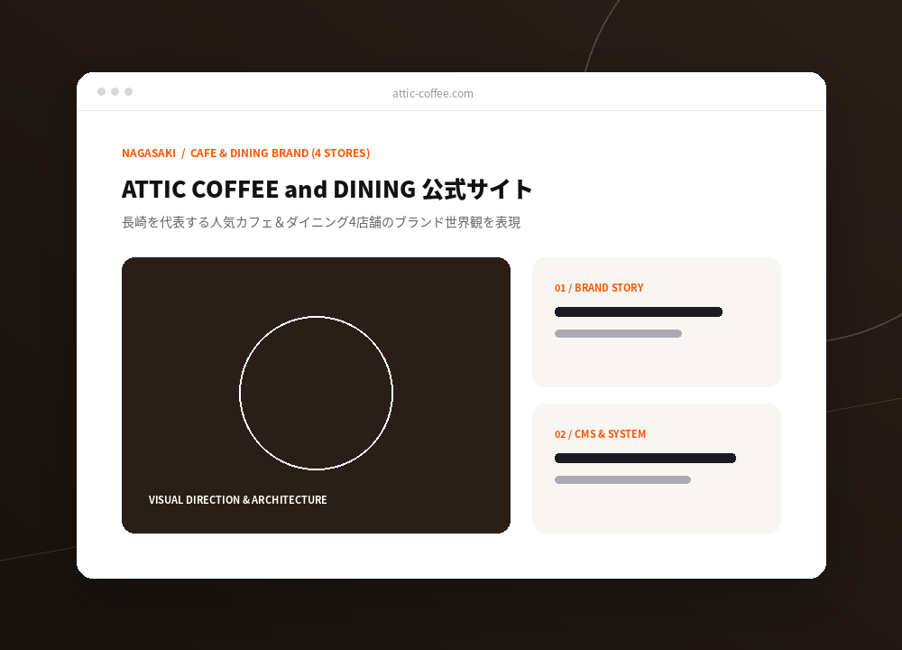

Nagasaki / Cafe & Dining
ATTIC COFFEE and DINING 公式サイト
長崎市内で4店舗を展開する人気カフェ＆ダイニングのコーポレート・ブランドサイト。観光で長崎を訪れるお客様から地元の常連様まで、4店舗それぞれの個性と世界観が直感的に伝わるデザインを構築しました。
- 担当
- ブランドデザイン / レスポンシブ設計 / 店舗案内・情報発信基盤構築
- 工夫
- 複数店舗のメニュー・雰囲気・アクセス情報を整理し、スマートフォンから迷わず行きたい店舗へ辿り着ける導線を設計しています。